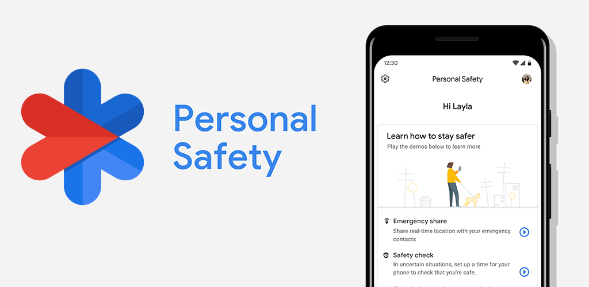

Con il termine di sanità digitale ci si riferisce all’utilizzo della tecnologia, da parte del servizio sanitario, per migliorare l’accesso, l’efficienza e la qualità delle cure. Uno degli esempi che forse può risultare più familiare è dato dalle piattaforme di telemedicina attraverso le quali è possibile avere un consulto medico a distanza, ma anche dalle app per il monitoraggio della salute e di alcune rilevazioni come, per esempio, la pressione arteriosa o il tasso di glicemia e dai servizi online chiamati anche di teleconsulenza che consentono di chiedere un parere ad un medico con le stesse modalità con le quali di solito ci si rivolge al medico di famiglia. Inoltre la consultazione e la modifica dei propri referti e delle proprie cartelle cliniche costituiscono un primo incisivo passo che preliminarmente il paziente dovrebbe compiere per poter controllare in autonomia e, si spera, con cognizione dei fatti, la sua salute ed intervenire, se ed in quel momento lo ritiene necessario, collaborando sempre con il Medico Curante.
Questi servizi vengono usati in molteplici campi come detto prima, tra cui per esempio Numerose app aiutano a tenere sotto controllo parametri importanti come pressione sanguigna, battito cardiaco, glicemia o attività fisica. Questi strumenti permettono alle persone di seguire costantemente il proprio stato di salute e di condividere i dati con il medico in modo rapido e preciso.Ci sono app come Emergenza che sono servite in passato, nell'era del covid, quando magari qualcuno era infetto tu dovevi segnarlo sull'app in modo che i servizi sanitari venivano a sapere dell'accaduto.

{kind=link}
_0.png){kind=link}
{kind=link}
{kind=link}